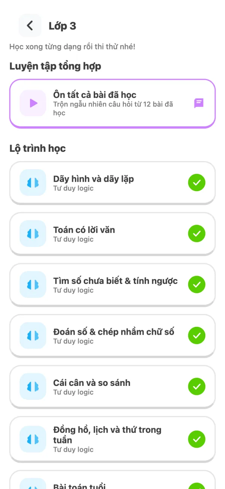

Lộ trình riêng cho từng lớp
Các dạng toán được sắp từ dễ đến khó, bám sát những chủ đề thường gặp trong đề thi toán tư duy: logic, số học, hình học, đo lường, tổ hợp.
- 27 – 58 dạng mỗi lớp, đánh dấu dạng đã học để phụ huynh nhìn là biết con đang ở đâu.
- Ôn tập tổng hợp trộn ngẫu nhiên câu hỏi từ mọi bài con đã học.